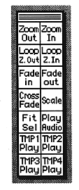

Return to previous page ｜ Return to menu ｜ Go to next page
-
■ Control window
The - control window is always displayed on the screen. Clicking on the icon is the same as selecting the menu. For the function of each icon, refer to “■ Control window” in 6. Function details.

Return to previous page ｜ Return to menu ｜ Go to next page